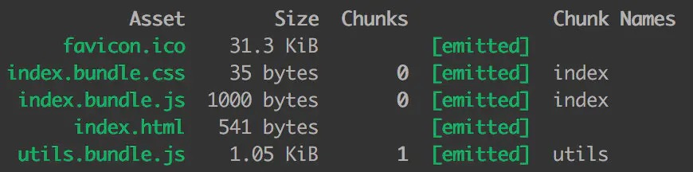
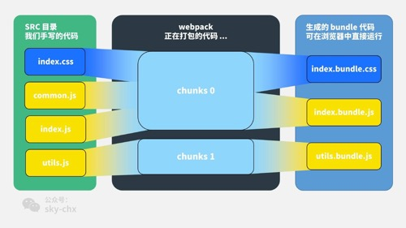

首先我们在 src 目录下写我们的业务代码，引入 index.js、utils.js、common.js 和 index.css 这 4 个文件，目录结构如下：
1 | src/ |
index.css 写一点儿简单的样式：
1 | body { |
utils.js 文件写个求平方的工具函数：
1 | export function square(x) { |
common.js 文件写个 log 工具函数：
1 | module.exports = { |
index.js 文件做一些简单的修改，引入 css 文件和 common.js：
1 | import './index.css'; |
webpack 的配置如下：
1 | { |
我们运行一下 webpack，看一下打包的结果：

我们可以看出，index.css 和 common.js 在 index.js 中被引入，打包生成的 index.bundle.css 和 index.bundle.js 都属于 chunk 0，utils.js 因为是独立打包的，它生成的 utils.bundle.js 属于 chunk 1。
感觉还有些绕？我做了一张图，你肯定一看就懂：

看这个图就很明白了：
- 对于一份同逻辑的代码，当我们手写下一个一个的文件，它们无论是 ESM 还是 commonJS 或是 AMD，他们都是 module ；
- 当我们写的 module 源文件传到 webpack 进行打包时，webpack 会根据文件引用关系生成 chunk 文件，webpack 会对这个 chunk 文件进行一些操作；
- webpack 处理好 chunk 文件后，最后会输出 bundle 文件，这个 bundle 文件包含了经过加载和编译的最终源文件，所以它可以直接在浏览器中运行。
一般来说一个 chunk 对应一个 bundle，比如上图中的 utils.js -> chunks 1 -> utils.bundle.js ；但也有例外，比如说上图中，我就用 MiniCssExtractPlugin 从 chunks 0 中抽离出了 index.bundle.css 文件。
# 一句话总结：
module ， chunk 和 bundle 其实就是同一份逻辑代码在不同转换场景下的取了三个名字：
我们直接写出来的是 module，webpack 处理时是 chunk，最后生成浏览器可以直接运行的 bundle。